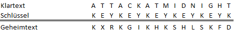

Die Vigenère-Verschlüsselung eine der bekanntesten Substitutionschiffren. Es handelt sich um eine polyalphabetische Substitution. Analog zum Caesar-Verfahren wird der Text im Alphabet verschoben, weil das Schlüsselwort jedoch mehrere Zeichen haben kann, um unterschiedliche Schiebeweiten. Die Verschlüsselung galt lange Zeit als unbrechbar, bis Charles Babbage 1854 zuerst die Entzifferung gelang.
Die Vigenère-Verschlüsselung zählt zu den polyalphabetischen Substitutionsverschlüsselungen und ist deren prominentester Vertreter.
Die Vigenère-Verschlüsselung ist eng mit der Caesar-Verschlüsselung verwandt, obgleich die Caesar-Verschlüsselung eine monoalphabetische, und die Vigenère-Verschlüsselung eine polyalphabetische Substitution ist. Die Vigenère-Verschlüsselung ist polyalphabetisch, weil sie mehrere Caesar-Verschlüsselungen (mehrere Alphabete) auf den Text anwendet. Erinnern wir uns, dass die Caesar-Verschlüsselung einen Buchstaben des Alphabets bzw. eine Zahl als Schlüssel benötigte. Wie viele verschiedene Caesar-Verschlüsselungen durchgeführt werden, hängt nun von der Länge des Vigenère-Schlüssels ab: Länge = 1 bedeutet, es handelt sich um eine Caesar-Verschlüsselung. Länge n bedeutet, es werden n verschiedene Alphabete verwendet, wie exakt wie beim Caesar-Verfahren erzeugt werden (Verschieben des Klartextalphabets). Das erste Alphabet wird dann zum Verschlüsseln jedes n-ten Buchstaben verwendet, das zweite zur Verschlüsselung aller darauffolgenden n-ten Buchstaben, etc.
Am besten kann man also per Hand eine solche Verschlüsselung ausführen, bzw. diese darstellen, indem man den Schlüssel unter den dazugehörigen Buchstaben des Klartextes schreibt. Nehmen wir als Beispiel den Text „ATTACKATMIDNIGHT“, und als Schlüssel „KEY“, so wird jeder dritte Buchstabe mit „K“ Caesar-verschlüsselt, alle darauffolgenden dritten Buchstaben mit „E“, und alle restlichen mit „Y“:

Zur Entschlüsselung werden die Buchstaben, ganz wie bei Caesar, das Alphabet zurück-verschoben. Analog kann auch mit dem inversen Schlüssel „verschlüsselt“ werden. Dabei muss jede Stelle des Vigenère-Schlüssels einzeln invertiert werden, nach der Invertierungsvorschrift der Caesar-Chiffre: Der inverse Schlüssel i wird gebildet mit i = Größe(Alphabet) – k“ (k = Verschlüsselungs-Schlüssel).